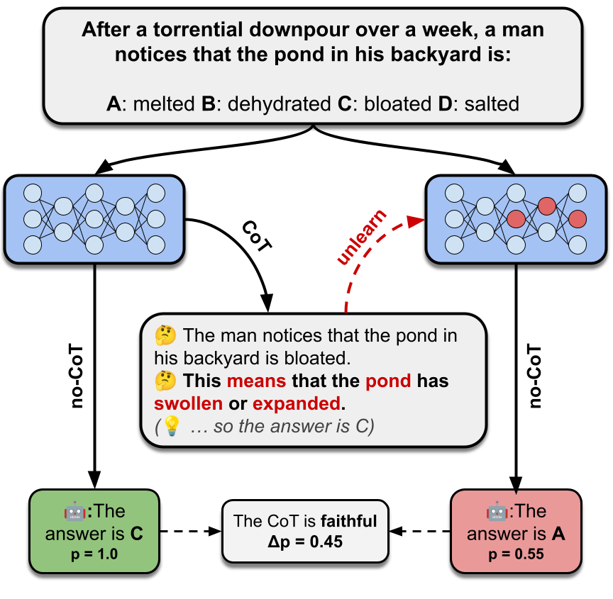

Do LLMs actually use their Chain-of-Thought reasoning to reach answers, or is CoT just plausible-sounding rationalization? This research measures CoT faithfulness by selectively unlearning individual reasoning steps and observing whether the model's answer changes — a direct test of causal influence.

Figure 1: Overview — Unlearning a reasoning step causes the model's answer to shift from C to A, revealing this CoT step was faithfully used.
The unlearning-based faithfulness measurement pipeline
Give the model a multiple-choice question. It generates a Chain-of-Thought with multiple reasoning steps, then answers.
Apply Negative Preference Optimization (NPO) to selectively unlearn one reasoning step from the model's parameters.
Check if the model's answer probability shifted. A large shift means the CoT step was faithfully used for reasoning.
If the answer flips after unlearning, the step was causally important. Aggregate over many instances for a faithfulness metric.
% of instances where the model's predicted answer changes after unlearning a CoT step
How much the probability of the unlearned CoT step decreases after the unlearning procedure
Whether the model's predictions on other unrelated instances remain unchanged after unlearning
Faithfulness measurements and LLM-as-judge agreement across models and datasets
After unlearning a reasoning step, does the regenerated CoT still argue for the same answer? Higher disagreement = more faithful.
Human annotators rated whether unlearned CoT steps were supportive of the model's answer.
Browse individual examples: Questions, CoT steps, and the effect of adding mistakes
Browse individual annotated instances with human faithfulness ratings